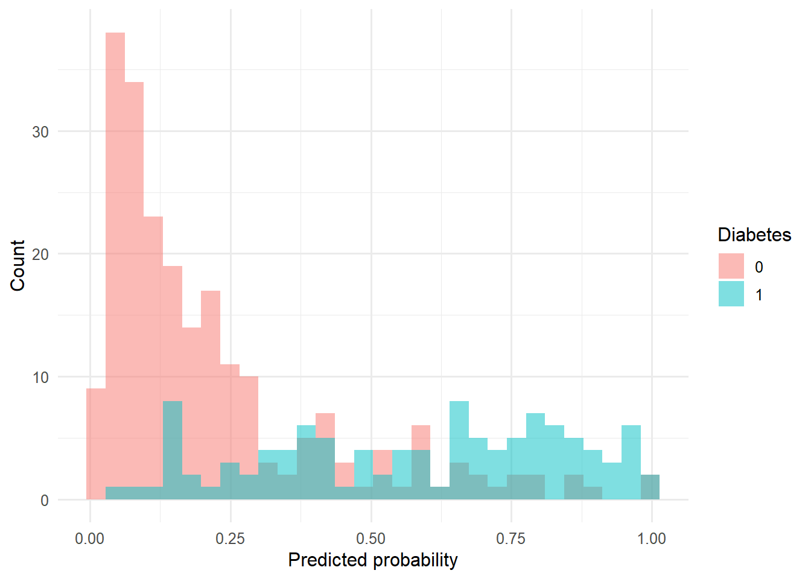
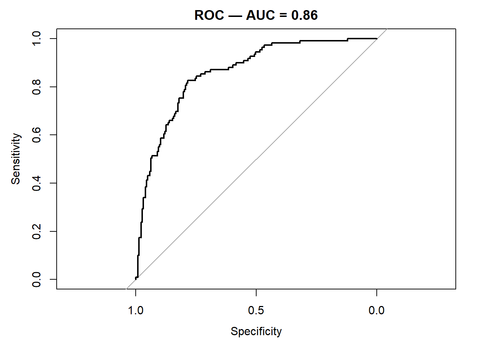
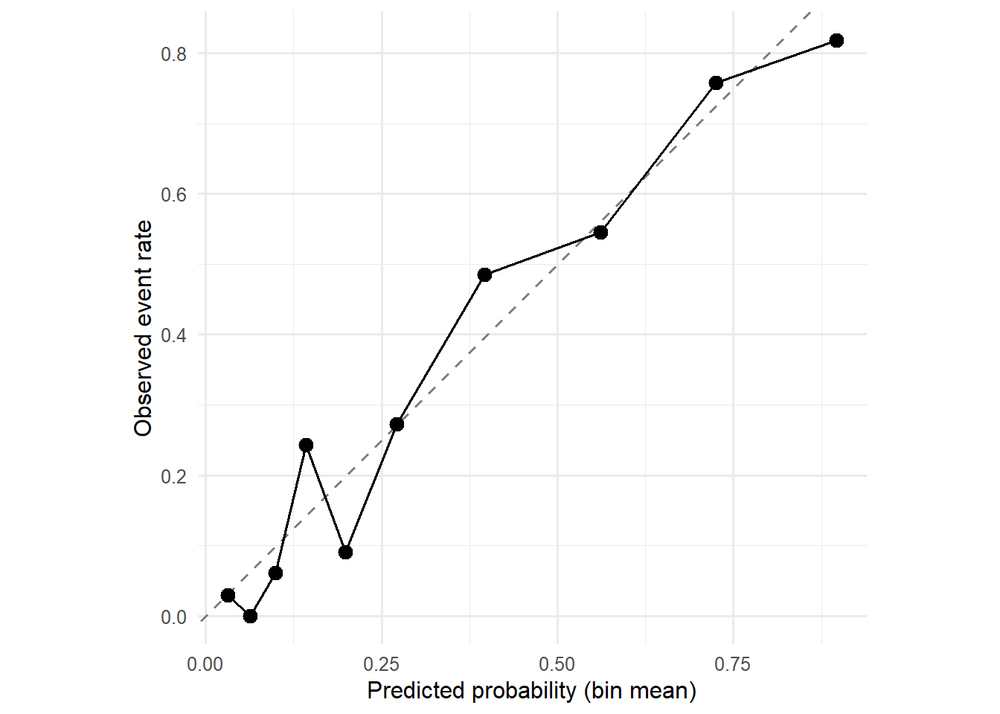

Course 2 — Biostatistics Courses
Note
Inference labs use the five-step template: Hypothesis → Visualise → Assumptions → Conduct → Conclude.
pROC and a calibration plot by binning predicted probabilities.Week 3 Session 1 on logistic regression.
A risk prediction model should do three things well: separate events from non-events (discrimination), produce predicted probabilities that match observed frequencies (calibration), and balance both in a single summary of overall performance (the Brier score). A model can have high discrimination and poor calibration — for instance, if the predicted probabilities are systematically too extreme — and a model with perfect calibration can still be useless if it cannot separate cases from non-cases.
ROC analysis walks the decision threshold across all possible values and plots sensitivity against 1 − specificity. The area under the curve (AUC) is the probability that a randomly chosen case receives a higher predicted probability than a randomly chosen non-case. The Brier score is the mean squared error between predicted probabilities and the 0/1 outcome; a perfect model has a Brier of 0 and the no-skill model has Brier equal to the variance of the outcome.
Calibration plots group predicted probabilities into bins and plot the observed event rate in each bin against the mean predicted probability. A 45° reference line is perfect calibration. Smoothed (LOESS) calibration curves are an alternative in larger samples.
Using MASS::Pima.tr (train) and MASS::Pima.te (test), fit a logistic regression and evaluate its discrimination, calibration, and Brier score.
train <- as_tibble(Pima.tr) |> mutate(y = as.integer(type == "Yes"))
test <- as_tibble(Pima.te) |> mutate(y = as.integer(type == "Yes"))
fit <- glm(y ~ glu + bmi + age + ped, data = train, family = binomial)
test$p <- predict(fit, test, type = "response")
ggplot(test, aes(p, fill = factor(y))) +
geom_histogram(position = "identity", alpha = 0.5, bins = 30) +
labs(x = "Predicted probability", y = "Count", fill = "Diabetes")
The usual logistic-regression assumptions for the training fit; evaluation is on held-out data.
Discrimination:
Area under the curve: 0.858595% CI: 0.8173-0.8997 (DeLong)
Calibration (decile binning):
cal <- test |>
mutate(bin = ntile(p, 10)) |>
group_by(bin) |>
summarise(predicted = mean(p), observed = mean(y), n = n())
ggplot(cal, aes(predicted, observed)) +
geom_abline(linetype = 2, colour = "grey50") +
geom_point(size = 3) +
geom_line() +
coord_equal() +
labs(x = "Predicted probability (bin mean)",
y = "Observed event rate")
Brier score:
On the held-out test set (n = 332), the four-predictor logistic model achieved AUC = 0.86 (95% CI: 0.82 to 0.9) and a Brier score of 0.142. Calibration by decile was close to the 45° line.
R version 4.5.2 (2025-10-31 ucrt)
Platform: x86_64-w64-mingw32/x64
Running under: Windows 11 x64 (build 26200)
Matrix products: default
LAPACK version 3.12.1
locale:
[1] LC_COLLATE=English_Germany.utf8 LC_CTYPE=English_Germany.utf8
[3] LC_MONETARY=English_Germany.utf8 LC_NUMERIC=C
[5] LC_TIME=English_Germany.utf8
time zone: Europe/Berlin
tzcode source: internal
attached base packages:
[1] stats graphics grDevices utils datasets methods base
other attached packages:
[1] pROC_1.19.0.1 MASS_7.3-65 broom_1.0.12 lubridate_1.9.5
[5] forcats_1.0.1 stringr_1.6.0 dplyr_1.2.0 purrr_1.2.2
[9] readr_2.2.0 tidyr_1.3.2 tibble_3.3.1 ggplot2_4.0.3
[13] tidyverse_2.0.0
loaded via a namespace (and not attached):
[1] gtable_0.3.6 jsonlite_2.0.0 compiler_4.5.2 Rcpp_1.1.1-1.1
[5] tidyselect_1.2.1 scales_1.4.0 yaml_2.3.12 fastmap_1.2.0
[9] R6_2.6.1 labeling_0.4.3 generics_0.1.4 knitr_1.51
[13] backports_1.5.1 htmlwidgets_1.6.4 pillar_1.11.1 RColorBrewer_1.1-3
[17] tzdb_0.5.0 rlang_1.2.0 stringi_1.8.7 xfun_0.57
[21] S7_0.2.2 otel_0.2.0 timechange_0.4.0 cli_3.6.5
[25] withr_3.0.2 magrittr_2.0.4 digest_0.6.39 grid_4.5.2
[29] hms_1.1.4 lifecycle_1.0.5 vctrs_0.7.3 evaluate_1.0.5
[33] glue_1.8.0 farver_2.1.2 rmarkdown_2.31 tools_4.5.2
[37] pkgconfig_2.0.3 htmltools_0.5.9